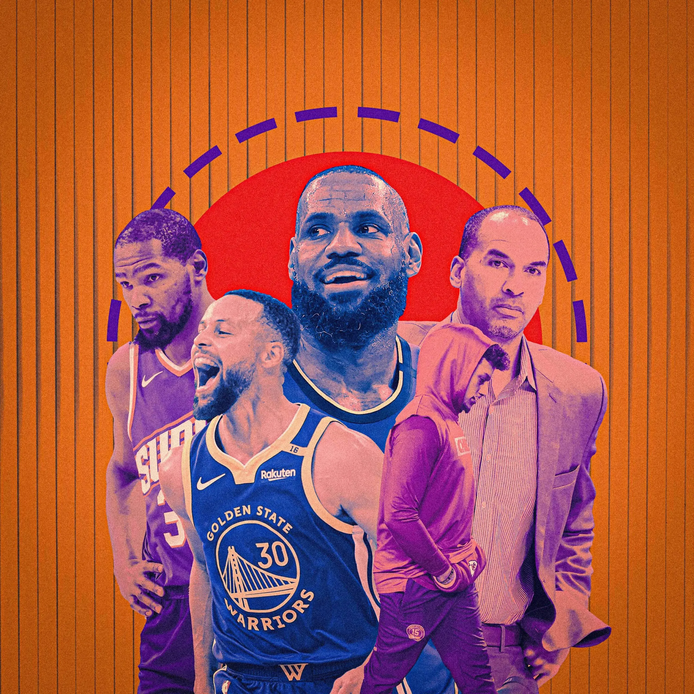
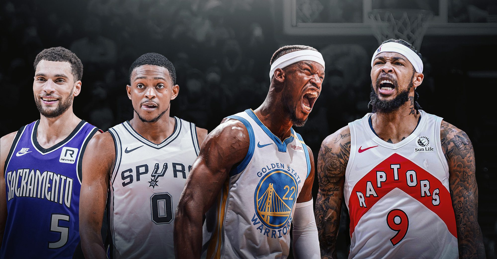

A temporada 2024-2025 da NBA está bastante movimentada, com equipes buscando equilíbrio entre reconstrução e disputa pelo título. O destaque ficou para o trade deadline que ocorreu em fevereiro de 2025, onde tivemos trocas de grande impacto. A mais comentada foi a troca envolvendo Luka Dončić, que saiu do Dallas Mavericks para o Los Angeles Lakers, em um negócio que envolveu o astro Anthony Davis e múltiplas escolhas de draft. Essa movimentação mudou completamente o equilíbrio das conferências e reacendeu a expectativa de um confronto Lakers vs. Celtics nas finais da NBA. Além disso, outras estrelas como De’Aaron Fox, Zach LaVine e Jimmy Butler também mudaram de casa, com times fazendo movimentos para tentar se fortalecer para os playoffs.
Além do deadline, o calendário da NBA conta com o buyout deadline, que em 2025 foi até o começo de março. Esse prazo é crucial para jogadores veteranos e equipes que não têm mais chances de playoffs: muitas vezes, times liberam jogadores para que eles possam se juntar a franquias que brigam pelo título, e assim fortalecerem seus elencos. Essa é uma janela estratégica porque esses atletas experientes podem fazer a diferença nas rodadas finais e nos playoffs. Após essa data, jogadores ainda podem ser dispensados, mas não podem jogar pelos novos times na pós-temporada.

Outra fase muito importante é o período da free agency, que começou no final de junho de 2025, após o fim da temporada e a moratória. A moratória, que vai até início de julho, é um período onde os times podem negociar verbalmente com agentes livres, mas não podem assinar contratos oficialmente. Após essa janela, os contratos passam a valer, e é quando as maiores mudanças podem ocorrer, com equipes reforçando seus elencos para a próxima temporada ou se preparando para reconstruções. Esse período é também marcado por especulações e rumores intensos.

No âmbito das regras e finanças, a NBA continua a ajustar o teto salarial (salary cap) e as restrições que impactam as trocas. O novo acordo coletivo (CBA) introduziu limites ainda mais rigorosos para times que ultrapassam certos patamares financeiros, conhecidos como “first apron” e “second apron”. Times que ultrapassam essas linhas ficam restritos em negociações, não podendo receber salários maiores do que os enviados, e isso dificulta movimentos mais agressivos na trade deadline. Assim, times “capados” precisam ser criativos, usando picks de draft e jogadores com contratos menores para fazer trocas vantajosas. Essas regras criam um cenário mais estratégico e equilibrado, impedindo grandes concentrações de talentos apenas em poucos times.

Além disso, a NBA segue sendo uma liga muito global, com jogadores de vários países deixando sua marca e ampliando a popularidade do basquete. A competição está cada vez mais acirrada, especialmente nas conferências Oeste e Leste, onde os times estão buscando construir super times para enfrentar as potências tradicionais. Jogadores jovens, como Victor Wembanyama, que foi a grande promessa no draft recente, estão mudando o jogo com seu talento e versatilidade, enquanto veteranos buscam se reinventar para ajudar suas equipes a alcançar o título.

Elaborado por Renan Lebrão